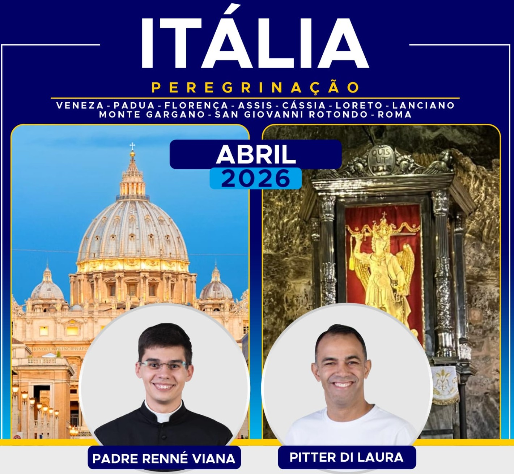

Uma peregrinação inesquecível pela Itália, percorrendo os mais importantes santuários e locais religiosos do catolicismo: Veneza, Pádua, Florença, Assis, Cássia, Loreto, Lanciano, Monte Gargano, San Giovanni Rotondo e Roma.
Esta peregrinação especial é realizada em parceria com a Canção Nova, com a presença do missionário Pitter Di Laura e sob a direção espiritual do Padre Renné Viana.
Destinos incluídos: Basílica de Santo Antônio (Pádua), Praça de São Marcos e Igreja de Santa Luzia (Veneza), Catedral de Santa Maria da Flor (Florença), Basílicas de São Francisco e Santa Clara (Assis), Santuário de Santa Rita (Cássia), Santuário de Loreto, Milagre Eucarístico de Lanciano, Santuário de São Miguel Arcanjo (Monte Gargano), Túmulo de São Padre Pio, Basílica de São Pedro, Museus do Vaticano, Coliseu e muito mais.
Apresentação no aeroporto de Guarulhos. A partir de São Paulo, todos os voos e roteiro em grupo.
Chegada. Recepção no aeroporto e traslado ao hotel em Veneza. Chegada no hotel, acomodação e jantar.
Após café da manhã no hotel, saída para Pádua. Visita à Basílica de Santo Antônio (possibilidade de Missa), onde estão suas relíquias e túmulo do Santo. Continuação para Veneza. Saída em Vaporetto para a Ilha de Veneza onde está a Praça de São Marcos com a Catedral e Igreja de São Jeremias, onde está o corpo de Santa Luzia. Tempo livre. Retorno ao hotel e jantar.
Após café da manhã, saída para a região da Toscana. Visita panorâmica em Florença: Catedral de Santa Maria da Flor, Batistério com a Porta do Paraíso, Praça da Senhoria, Ponte Velha e Mercado da Palha. Continuação para Assis. Acomodação e jantar.
Visita à Basílica de São Francisco (possibilidade de Missa), Praça da Comuna, Santuário da Espoliação onde está o corpo do Beato Carlo Acutis, Capela de São Damião, Basílica de Santa Clara e Basílica Santa Maria dos Anjos com a Porciúncula. Continuação para Cássia, cidade de Santa Rita. Retorno ao hotel e jantar.
Visita ao Santuário da Santa Casa de Loreto (possibilidade de Missa). Continuação para Lanciano, local do Primeiro Milagre Eucarístico (ano 700). Visita à Igreja de São Longino. Chegada ao hotel e jantar.
Visita ao Santuário de São Miguel Arcanjo em Monte Gargano. Continuação para San Giovanni Rotondo. Visita à nova Basílica e ao túmulo de São Padre Pio (possibilidade de Missa). Acomodação e jantar.
Saída para Roma. Chegada, acomodação no hotel e jantar.
Visita à Praça de São Pedro para audiência com o Papa (se estiver em Roma). Visita à Basílica de São Pedro, túmulos papais, Museus do Vaticano e Capela Sistina. Retorno ao hotel e jantar.
Visita panorâmica da cidade: Coliseu (parada para fotos), Foros Romanos, Circo Máximo, Praça Veneza, Termas de Caracala e Fontana de Trevi. À tarde visita às Basílicas de Santa Maria Maior, São João de Latrão e São Paulo Fora dos Muros (Missa). Retorno ao hotel.
Traslado ao aeroporto para retorno ao Brasil.
Chegada no aeroporto de Guarulhos. Fim dos serviços.
* Diretores espirituais podem variar por peregrinação.
Vagas limitadas. Entre em contato para confirmar disponibilidade e receber sua cotação personalizada.
Solicitar via WhatsApp Formulário de ContatoNão realizamos pagamentos online.
Atendimento personalizado garantido.